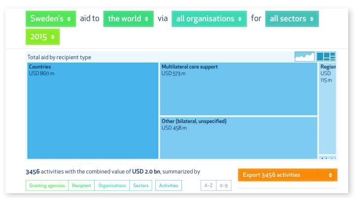

سوئد دارای سنت طولانی باز بودن، دموکراسی و دسترسی عمومی به اطلاعات است. در سال ۲۰۱۰، دستور کار اصلاحات برای توسعه همکاری سوئد (Openaid) توسط دولت در جهت افزایش شفافیت در زمینه تامین مالی اعطا کننده از طریق فرصتهای ایجادشده توسط پیشرفتهای فنآوری آغاز شد. بخشی از این دستور کار اصلاحات شامل تضمین شفافیت کمک بود که نقشآفرینان دولتی را ملزم میکرد تا تمام اسناد و اطلاعات عمومی مربوط به همکاری توسعه بینالمللی را در دسترس قرار دهند. این امر موجب توسعه سایت openaid.se توسط وزارت امور خارجه سوئد و آژانس همکاری توسعه بینالمللی سوئد (Sida) در آوریل ۲۰۱۱ شد. مرکز داده، که براساس داده حاکمیتی باز ساخته شدهاست، نشان میدهد که چه زمانی، به چه کسی و چرا کمک مالی پرداخت شد و نتایج چه بودند. اصلاحات به عنوان یک نیروی مهم برای افزایش شفافیت و پاسخگویی در همکاری توسعه در سطح بینالمللی و افزایش همکاری و مشارکت بیشتر نقشآفرینان در سیاست توسعه سوئد دیده میشود.
- داده باز میتواند برای افزایش شفافیت و پاسخگویی گروههای متمایز به طور همزمان مورد استفاده قرار گیرد. این امر موجب توسعه سایت openaid.se توسط وزارت امور خارجه سوئد و آژانس همکاری توسعه بینالمللی سوئد (سیدا) در آوریل ۲۰۱۱ شد. پلتفرم openaid.se همچنین نشان میدهد که چگونه اصل دسترسی آزاد سوئد به اطلاعات میتواند در عصر دیجیتالی شدن بهروز شود.
- استانداردهای بینالمللی - مانند ابتکار شفافیت کمک بینالمللی (IATI)- میتوانند به دولتها و دیگر نهادها کمک کنند تا داده را به روشی منتشر کنند که بالاترین سطح قابلیت مقایسه و استفاده گسترده را ممکن سازد. فراداده - در این مورد، اسناد پروژه و کدگذاری جغرافیایی - میتواند سودمندی مجموعه دادههای استاندارد شده را بهبود بخشد.
- فقدان تعهدات سیاسی سطح بالا و تعریفشده به انتشار داده باز و استفاده مجدد از آن میتواند چالشهای عمده اما غیرقابل رفع ایجاد کند. در حالی که سوئد در حال حاضر به تعهدات سطح بالای خود میبالد، در سراسر گستره توسعه openaid.se، چنین سیاستی وجود ندارد.
۱. پیشینه و زمینه
شفافیت و دسترسی به اطلاعات عمومی یک سنت قدیمی در سوئد دارد. این دولت، اولین در جهان بود که لایحهای را تصویب کرد که اصل دسترسی عمومی به اطلاعات را در سال ۱۷۷۶ اجرا میکرد. این امر باعث شد که تمام مقامات ملزم به انتشار اسناد باشند، مگر اینکه قانون ویژه دسترسی آنها را محدود کند. دیدگاه بدون مانع مردم و رسانهها نسبت به فعالیتهای دولتی هنوز هم در لایحه ۲۰۰۹ / ۱۰: ۱۷۵ در مورد مدیریت دولتی دموکراسی، مشارکت و رشد اولویتبندی میشود. اساس این قانون، این باور است که اطلاعات قابلدسترس بیشتر، پایه و اساس بهتری برای تصمیمگیری فراهم میکند و دامنه فساد و سوءاستفاده از منابع را محدود میکند. تعهد سوئد نسبت به شفافیت و موشکافی عمومی اغلب آن را در صدر ردهبندی شفافیت قرار میدهد.
سوئد به عنوان بخشی از تعهد خود به دسترسی عمومی، تضمین شفافیت کمک را در سال ۲۰۱۰ آغاز کرد. با توجه به تضمین، تمام فعالان عمومی که سرمایههای خود را تحت همکاری توسعه بینالمللی اختصاص میدهند، ملزم به انتشار اطلاعات و اسناد مربوطه به صورت آنلاین با فرمت باز هستند. این شامل توضیح در مورد اینکه چه زمانی، برای چه کسی و چرا پول در دسترس است، و چه نتایجی به دست آمدهاست، میشود. در این تئوری، چنین اطلاعاتی سهامداران مربوطه را قادر میسازد تا کل زنجیره کمک را از تصمیمات کلی تا اجرا و نظارت دنبال کنند.
مظهر ضمانت شفافیت، وبسایت Openaid (www.openaid.se) است که به طور مشترک در آوریل ۲۰۱۱ توسط وزارت امور خارجه سوئد و آژانس همکاری توسعه بینالمللی سوئد (Sida) راهاندازی شد. مرکز داده openaid.se چندین هدف سیاسی دارد: برای ترویج شفافیت فعال، فراهم کردن یک پایگاه دانش بهتر برای برنامهریزی، هدایت و تصمیمگیری در مورد تخصیص کمکهای سوئد و کمک به اولویتهای سیاست، افزایش مشارکت در توسعه همکاری سوئد، تقویت پیششرطها برای پاسخگویی واقعی، محدود کردن فضا برای فساد، تکرار و استفاده ناکارآمد از منابع و ترویج تفکر نوآورانه در بخشهای مختلف مربوط به توسعه.
اصلاح روند توسعه همکاری و جذب کمک، تا حدی تحتتاثیر تعهداتی بود که در مجامع بینالمللی، از جمله IATI و بیانیه پاریس، دستور کار اکرا برای اقدام، ایجاد شده بود. این پلتفرم همچنین مولفه اصلی طرح اقدام ملی مشارکت دولت باز سوئد بود که در سپتامبر ۲۰۱۱ به امضا رسید. طرح اقدام بر توانمندسازی دولت برای ادامه طرحهای پیشنهادی برنامهریزیشده، و همچنین افزایش مقدار ورودی از جامعه مدنی و تعهد به انتشار دادههای استاندارد در قالب IATI متمرکز بود. تعهد سوئد به اصلاحات در این بخش همچنین دولت را به امضای قرارداد مشارکت بوسان برای توسعه همکاری موثر هدایت کرد، که تعهدات زمانی برای انتشار کامل اطلاعات کمک به یک استاندارد مشترک و باز را تعیین میکند. همچنین چارچوبی برای «گفتگوی مداوم و تلاش برای افزایش اثربخشی توسعه همکاری» از طریق دسترسی به اطلاعات در جریان کمکها و فعالیتها در کشورهای اهدا کننده و شریک ارائه میدهد.
۲. توصیف و آغاز پروژه
اولین بار در آوریل ۲۰۱۱، openaid.se ارائه شد که یک سرویس اطلاعاتی مبتنی بر وب در مورد کمک سوئد است که براساس داده حاکمیتی باز ساخته شدهاست. این سایت عموم مردم، فعالان کمک و سایر ذینفعان را قادر میسازد که چه زمانی، برای چه کسی و برای چه اهدافی وجوه کمک پرداخت شدهاست، و با چه نتایجی پیگیری کنند. فصل مشترک پلتفرم بسیار ساده و شهودی است و هر کسی را قادر میسازد تا از آن استفاده کند. این وبسایت با استفاده از دادههای عمومی در سطح فعالیت کمکهای فردی وزارت امور خارجه، آژانس همکاری توسعه بینالمللی سوئد (Sida) و دیگر مقامات و وزارتخانههایی که به کمکهای مالی رسیدگی میکنند، ساخته شدهاست. دادهها به صورت نقشههای درختی و گرافهایی که نشان میدهند چگونه و در کجا کمک توسط نوع گیرنده توزیع میشود، مجسم میشوند. بسته به انتخاب فیلتر، کاربران همچنین امکان مشاهده فهرستی از تمام فعالیتها، اعم از یک تا چند هزار برای هر گیرنده را دارند. این فعالیتها را میتوان در یک فایل مقادیر جدا شده (CSV) سازگار با اکسل دانلود کرد و برای توسعه برنامههای کاربردی جدید مورد استفاده قرار داد.
ویژگیهای دیگر، شامل قابلیت نظارت بر کل زنجیره کمک و ساختار فعالیت است که ارتباطات، برای مثال، یک تصمیم سیاسی و پرداخت را نشان میدهد. یک فرم تماس نیز به زبانهای سوئدی و انگلیسی در سایت موجود است که به شهروندان امکان میدهد مستقیماً نظرات و نگرانیهای خود را با سیدا در میان بگذارند. همچنین یک رابط برای دستگاههای تلفن همراه با تعامل و طراحی سفارشی و یک برنامه تلفن همراه وجود دارد. یکی از ویژگیهای کلیدی این برنامه تلفن همراه، عملکرد افشاگرانه است که به کاربران امکان میدهد مستقیماً مشکوک به کلاهبرداری را گزارش کنند.
دادههای زیربنایی
دادههای موجود در وبسایت براساس استاندارد IATI به صورت ماهانه منتشر میشود و تجزیه و تحلیل و مقایسه مجموعه دادهها از منابع مختلف را آسانتر میکند. این تعهد به یک استاندارد مشترک داده، بخشی از حرکت سوئد به سمت اجرای سند خروجی بوسان است، که هدف آن داشتن طیف کاملی از اطلاعات در دسترس عموم در یک استاندارد کمک باز است.

بیش از ۸۰ درصد دادهها در حال حاضر در قالب قابل خواندن توسط ماشین، با جمعآوری دادههای کاملا خودکار در هر شب در دسترس هستند. این شامل تمام دادههای ارائهشده توسط ۱۶ CSO است که دارای توافقات چارچوبی با سیدا هستند. اولین نسخه سایت بیش از ۱۰۰۰۰۰ سند را در سطح فعالیت منتشر کرد که میتواند توسط آژانس پرداخت یا شریک اجرایی مرتب شود. از زمان آغاز به کار، بیش از ۱۵ بهروزرسانی اضافی صورتگرفته است و دولت به طور مداوم به دنبال بهبود کیفیت داده هاست - از جمله تمرکز بر انتشار نتایج و ارزیابی داده. همچنین بر اضافه کردن انواع جدیدی از دادهها به شکلی که بتوان آنها را تجمیع کرد، تمرکز شدهاست. هدف سوئد تا پایان سال ۲۰۱۵ این بود که ۹۵ درصد سازگاری دادهها را با استاندارد IATI داشته باشد. همچنین یک ادغام مداوم بین پایگاهداده CSO و openaid.se وجود دارد که در نهایت دولت را قادر میسازد تا دادهها و نتایج دقیقتری را برای فعالیتهای CSO که توسط سیدا تامین مالی میشوند، نشان دهد.
فرمت باز
Openaid.se به عنوان یک سایت فشرده و باز شده وردپرس ساخته شدهاست، که به دیگر اهداکنندگان و دریافتکنندگان کمک، امکان میدهد تا با استفاده از دادهها و موضوعات خود، تاسیسات ردیابی کمک خود را ایجاد کنند. این امر، ارزش بالقوه عظیمی از نظر گسترش شفافیت در اکوسیستم کمک به عنوان یک کل دارد. سیدا همچنین استفاده از فرمت باز openaid.se (API) را افزایش دادهاست به طوری که مصرفکنندگان قادر به استفاده مجدد از داده برای جمعآوری API آنلاین شخص ثالث هستند. به دلیل اصول دسترسی عمومی سوئد، این دادهها به طور پیشفرض به حوزه عمومی تعلق دارند. با این حال، برخی محدودیتها برای مواد حساس یا طبقهبندیشده اعمال میشوند که فیلتر میشوند یا موادی که حق کپی متعلق به شخص دیگری است. در مورد دوم، دادهها هنوز در openaid.se در دسترس هستند؛ با این حال، بدون اجازه صاحب اصلی حق مولف، امکان چاپ مجدد آن وجود ندارد.
۳. تاثیر
شفافیت، برای بهبود روشی که توسعه همکاری در آن، در سطح بینالمللی ارائه میشود بسیار مهم است، به خصوص برای اهداکنندگان کمکهای سخاوتمندانه مانند سوئد که ۱ درصد از درآمد ناخالص ملی خود را به کمک به توسعه اختصاص میدهند. از نظر تاثیر، سوئد در میان اهداکنندگان اصلی از طریق پلتفرم نوآورانه openaid.se نقش رهبری را ایفا میکند که تحسین گستردهای برای انتشار اطلاعاتی دریافت کردهاست که فراتر از گزارش سنتی است تا شامل اسناد پروژه، کدگذاری جغرافیایی و داده نتایج کمک باشد. این تلاشها ثمربخش بودهاند - سوئد یکی از کشورهای دارای بالاترین رتبه در شاخص ادراک فساد سازمان شفافیت بینالمللی در سال ۲۰۱۴ است و یکی از اهداکنندگان بالاترین رتبه در شاخص شفافیت کمک در سال ۲۰۱۴ است. تاثیر را میتوان با توجه به افزایش شفافیت و پاسخگویی اعطاکننده با اثرات پیگیری بر کیفیت داده و همچنین کارایی مدیریت و بودجه اندازهگیری کرد:
افزایش شفافیت و پاسخگویی
با باز کردن دسترسی به زنجیره ارائه کمک و هزینهها، شهروندان و سایر ذینفعان کلیدی توانستهاند دولت سوئد را مسئول بدانند و فرآیندهای کمک از طریق بهبود ارائه خدمات، کاهش فرصتها برای انحراف و در نتیجه فساد کارآمدتر شدهاند. افزایش شفافیت همچنین دریافتکنندگان کمک را قادر ساختهاست تا منابع وارد شده به کشورشان را به طور موثرتری در شرایطی برنامهریزی و مدیریت کنند که چندین نقشآفرین در آن فعال هستند، در نتیجه انگیزه ارائه خدمات پایینتر را کاهش میدهند. به این ترتیب، پلتفرم openaid.se حمایت سیاسی و مدیریتی قوی و مشارکت سازمان در تمام سطوح را دریافت کردهاست.
با باز کردن داده کمک برای بررسی دقیق عمومی، تقاضا برای دولت برای بهبود و حفظ داده با کیفیت بالا نیز افزایشیافته است. طبق گفته کارل المستام، مدیر ایجاد شفافیت در سیدا، «فرآیند اجرای شفافیت و استاندارد IATI کیفیت را هدایت میکند چرا که ما را مجبور به نگاه سختگیرانه نسبت به داده خودمان و یادگیری از آن کردهاست.» طبق گفته هانا هلکوئیست، وزیر سابق توسعه بینالمللی، باز کردن داده همچنین دولت را قادر میسازد تا مشکلات و چالشهای اساسی که در سیستمهای گزارش کمک سوئد و فنآوری اطلاعات ایجاد شدهاند را به طور کامل درک کند.
این درک، همراه با فشار خارجی، سیدا را مجبور کردهاست تا به طور مداوم فرایندهای گزارشدهی و هرگونه نقص داده را بهبود بخشد. این نوع شفافیت دارای پتانسیل کاهش اساسی ساختار انگیزه برای فساد با قادر ساختن ذینفعان خارجی برای اشاره به مشکلات و حمایت از خواستههای آنها برای اصلاحات است. همچنین کمک را به طور خاصتر هدف قرار داده و در برخی موارد، منجر به تخصیص بودجه برای بهبود اداره کشور دریافتکننده، از جمله پروژههایی که با فساد مبارزه میکنند، شدهاست. این امر بدون تعامل فعال و ارتباط استراتژیک داخلی با کارکنان و خارجی با مردم و کشورهای گیرنده امکانپذیر نبود.
وزارت امور خارجه و سیدا از نظر مباحث داخلی شروع به طراحی سایت قبل از هرگونه تصمیمگیری رسمی کردند. برای پیشبرد این تصمیم، آنها جلسات منظمی با نقشآفرینان مختلف در دولت برگزار کردند تا به اعتراضات بپردازند و ابتکار عمل را به تعهدات گستردهتر ایجاد شده در سایر بخشهای دولت، مانند دستورالعمل PSI پیوند دهند، که از مقامات دولتی میخواهد تا دادههای خود را برای استفاده مجدد بدون هیچ هزینهای منتشر کنند. در انجام این کار، کارکنان به اهمیت دادههای خوب و قابلاعتماد، نه تنها برای سازمان بلکه برای توسعه جهانی همکاری و کشورهای شریک یادآوری شدند. از نظر خارجی، سیدا تلاش کرد تا آگاهی عمومی از ارزشهای شفافیت، داده باز و کیفیت داده را از طریق ارتباط و تسهیل گزارشدهی و تبدیل داده برای CSO هایی که پشتیبانی میکنند افزایش دهد. با توجه به نظر هلکوئیست، باز شدن داده، باعث تسهیل تغییر فرهنگی و نگرشی در مدیریت کمک (MFA و Sida) در مورد ارتباط آن با عموم شدهاست.
بهبود کارایی بخش مدیریت
پلتفرم openaid.se نیز تاثیر قابلتوجهی از نظر داشتن مکانیزمهای گزارشدهی کارآمدتر، از جمله سیستمهای مدیریت اطلاعات بهبود یافته و کاهش هزینههای گزارشدهی دستی مضاعف اطلاعات کمک، به ویژه در سطح دفتر کشور، نشان دادهاست. این مکانیزمهای گزارشدهی بهبود یافته، که تا حدی ناشی از تعهد به در دسترس قرار دادن دادههای خود در استاندارد IATI است، دولت را قادر ساختهاست تا سالانه حدود ۷ میلیون دلار صرفهجویی کند. همچنین از نظر اثربخشی کمک، مزایای زیر را در پی داشتهاست، زیرا دولت قادر به تجزیه و تحلیل و مقایسه مجموعه دادهها از طبقهبندی بودجه کشور شریک بودهاست، که ذینفعان را قادر میسازد تا ببینند کمک از اولویتهای خود پشتیبانی میکند و پاسخگویی را افزایش میدهد. براساس برآوردهای محافظهکارانه IATI، سالانه حدود ۱۸ میلیارد دلار کمک از طریق فساد از دست میرود. تحلیلهای هزینه - سود نشان میدهد که شفافیت بیشتر کمک پتانسیل کاهش چنین فسادی و بهبود پیشبینی تا ۱.۶ میلیارد دلار در سال را دارد.
فعال کردن روند همکاری با ذینفعان
باز کردن اطلاعات کمک، تنها شروع کار است. برای اینکه شفافیت، تحولآمیز باشد، ذینفعان باید در واقع از دادههای مرتبط با کمک استفاده کنند. یکی از تاثیرات داده تازه آزاد شده بر پلتفرم openaid.se، توانایی سیدا برای بهرهبرداری از دانش و خلاقیت طیف گستردهای از ذینفعان در جامعه سوئد برای ارائه ایدههای جدید برای ابزارها، فعالیتها و کارکردها برای سایت بودهاست. همچنین اشکال اساسی و پیچیده همکاری با CSO ها، از جمله PWYF، را به دنبال افزایش شفافیت کمک تسهیل کردهاست. این امر، پویایی قدرت بین سازمانهای غیردولتی و دولت را تغییر داده و عملکرد سازمان را به اصول مشارکت، پاسخگویی و توانمندسازی آن نزدیکتر کردهاست. در این رابطه، تلاشهای سیدا برای بهبود تلاشهای توسعه اهداکنندگان و کشورهای شریک با عمل کردن به عنوان مدلی برای کشورهایی مانند دانمارک، که به تازگی یک پلتفرم مشابه را راهاندازی کردهاند، نیز به کار گرفته شدهاست. در حالی که ارزیابی اینکه آیا این ایده صراحتا شبیهسازی شدهاست یا خیر، دشوار است، این واقعیت که openaid.se از یک سایت فشرده با دادههای باز شده استفاده میکند، نیاز کشورهای دیگر به شروع از ابتدا در زمان ایجاد طرحهای خود را از بین میبرد.
۴. چالشها
سوئد، گامهای بزرگی به سمت توسعه باز، فراگیر، پاسخگو و مسئول، از طریق سایت openaid.se برداشته است، که بحثهای سیاسی و عقاید در مورد اولویتهای مرتبط با مبحث کمک را هدایت میکند. هماهنگی توسعه و هزینه بین اهداکنندگان و کشورهای شریک نیز بهبود یافتهاست که تاثیر بیشتری را با منابع محدود ممکن میسازد. با این حال، دولت هنوز هم با چالشهای متعددی در تبدیل آسان دادهها با ابزارهای مناسب برای تسهیل درک، تحلیل و استفاده توسط مخاطبان عمومی مواجه است. اگر سوئد در مسیر شفافسازی کمک، که مسیر خود را بر روی آن تنظیم کردهاست، ادامه دهد، باید به چندین حوزه توجه شود:
چالشهای ساختاری
Openaid.se یک سیستم اختصاصی با یک دیدگاه سرمایهگذارمحور است. این بدان معنی است که اغلب چالشهایی در دسترسی و جمعآوری اطلاعات و فعالیتها از سیستمهای گیرنده وجود دارد، با توجه به اینکه نرمافزار برای سوئد ساخته شدهاست. بر این اساس، اغلب به دست آوردن درک درستی از تاثیر کمک توسعه دشوار است و بسیاری از دادهها بر روی پلتفرم، به عنوان مثال، برای کاربردهای ساختاری، مورد استفاده مجدد قرار نگرفتهاند. برای غلبه بر این مشکلات ساختاری، openaid.se میتواند روشهای جدیدی برای ترکیب دادهها با سیستمهای دیگر از طریق ادغام ابزارهای جدید ایجاد کند. دادههای قابلمقایسه آسان، منجر به تحلیلهای تاثیر بهتر برای درک اثرات کمک، نوآوریهای هدفمند و کارآمدتر، شفافیت و پاسخگویی بیشتر میشود.
حریم خصوصی دادهها
ماهیت فعال و فوری انتشار دادههای مرتبط با کمک، نگرانیهای حریم خصوصی را در میان کارکنان سیدا آشکار کردهاست، علیرغم این واقعیت که این اطلاعات قبل از توسعه openaid.se به صورت عمومی در دسترس بود. این امر نیاز به تفکر در مورد این که سایت باید چقدر شفاف باشد و چه ابزارهایی را می توان برای کاهش نگرانی در مورد حریم خصوصی داده اجرا کرد، از جمله استفاده از یادداشتهای غیر رسمی و نظرات تنها در دسترس کارکنان را افزایش دادهاست. استخدام کارکنان برای توسعه مداوم سایت ضروری است. به این ترتیب، سیدا باید به اولویتبندی ارتباط با کارکنان در مورد ارزشهای شفافیت و پاسخگویی ادامه دهد و در عین حال به نگرانیهای آنها در مورد حریم خصوصی دادهها پاسخ دهد.
قابلیت استفاده و مشارکت شهروندان
هنگامی که سیدا برای اولین بار openaid.se را در سال ۲۰۱۱ راهاندازی کرد، تجربه کاربر یک اولویت کلیدی نبود. به این ترتیب، سایت فرصتهای محدودی را برای مشارکت یا تعامل شهروندان فراهم میکند. تنها کانال ارائه بازخورد، یک دکمه نظر است، که مردم برای گزارش اشکالات از آن استفاده می کنند.
قابلیت استفاده نیز یک نگرانی است، و عناوین پروژه اغلب شامل عبارات رمزی هستند که تنها برای کسانی قابل تفسیر هستند که به صورت داخلی روی پروژهها کار میکنند، و درک آنها را برای مخاطبان گستردهتر دشوار میسازد. به این ترتیب، نیاز به افزایش آگاهی در میان کارکنان برای اطمینان از دسترسی دادهها با کاربران خارجی وجود دارد.
مجوز دادهها
در طول توسعه اولیه و استقرار openaid.se، محیط سیاست داده سوئد چالشهای متعددی را ارائه کرد. تا ماه می ۲۰۱۵، مقررات خاصی در مورد داده باز و منابع داده باز وجود نداشت. دستورالعمل PSI به پر کردن این خلاء قضایی در رابطه با استفاده مجدد از دادهها در سوئد کمک کرد. با این حال، قبل از معرفی دستورالعمل PSI، openaid.se نه پشتیبانی سیاست سطح بالا داشت و نه دستورالعملها یا استانداردهای صدور مجوز را به وضوح تعریف کرد. در حالی که سوئد به برداشتن گامهایی برای احترام به حق قانونی دسترسی و استفاده مجدد از داده عمومی ادامه میدهد، چالشهای اولیه مربوط به ساختارهای صدور مجوز داده قانونی برای openaid.se باید رو به کاهش باشند.
۵. نگاهی به مسائل پیش رو
به منظور پرداختن به چالشهای بالا و ادامه گسترش موفقیت openaid.se از نظر افزایش معنیدار شفافیت، سوئد باید پیادهسازی دادههای برنامهریزی رو به جلو و افزایش عملکرد سایت را در نظر بگیرد.
قابلیت استفاده و عملکرد
در حالی که سوئد گامهای مهمی برای بهبود قابلیت استفاده و عملکرد پلتفرم openaid.se از زمان آغاز آن در سال ۲۰۱۱ برداشته است، بسیاری از اطلاعات هنوز برای شهروندان عادی بسیار پیچیده است تا بتوانند به شیوهای معنیدار آن را درک کنند. علاوه بر این، با توجه به ماهیت سرمایهگذارمحور سایت، فرصتهای تعامل شهروندان محدود است. برای ادامه بهبود عملکرد، تصویرسازی شهودی دادهها و داستانسرایی باید برای ارائه مقادیر زیادی از اطلاعات در دسترس به شیوهای که تاثیر تامین مالی کمک برای عموم را نشان دهد، به کار گرفته شود. ابزارهای توسعهیافته توسط سازمانهای دیگر را میتوان در سیستم فعلی ادغام کرد تا نظارت و ارزیابی میدانی بهتر را ممکن سازد. به عنوان مثال، ابزارهایی مانند Water for People's Field Level Observations Watch (FLOW)۵۸ یا ابزارهای انتشار توزیع شده مانند Akvo Really Simple Reporting (RSR)۵۹ میتوانند بسیار مؤثر باشند.
از نظر توابع انتشار و بازخورد توزیعشده، سیدا باید اطمینان حاصل کند که آنها نسبت به نگرانیهای حریم خصوصی داده کارکنان واکنش نشان میدهند و به طور بالقوه عملکردی را برای کاهش تنشها مانند نظرات غیررسمی و یادداشتهایی که تنها به صورت داخلی در دسترس هستند، راهاندازی میکنند.
طرحریزیِ آینده
انتشار اطلاعات بیشتر و دقیقتر برنامهریزی رو به جلو توسط سوئد، تاثیر زیادی بر کشورهای دریافتکننده خواهد داشت. این میتواند شامل ارتباط با اسناد پروژه و همچنین نتایج و دادههای شرایط برای تمام فعالیتهای برنامهریزیشده در فایلهای IATI برای ترویج دسترسی و استفاده توسط دیگران باشد. این امر، مالکیت محلی بیشتر نسبت به نتایج توسعه را ممکن میسازد و اثراتی را برای افزایش پاسخگویی و حاکمیت دنبال میکند. سوئد در طرح اقدام مشارکت حاکمیتی باز خود ادعا میکند که این شفافیت کمک همچنین امکان استفاده کامل از منابع مالی موجود برای ریشهکنی فقر و تسهیل تقسیم بهتر نیروی کار را فراهم خواهد کرد. طبق گفته سامانتا کاستر از AidData، «مجهز کردن CSO ها و وزارتخانههای دولتی برای استفاده از آن در برنامهریزی، دفاع و تحقیق برنامه نیز برای حفظ عملکرد، ضروری است.»
openaid.se همچنین باید انتشار و استفاده از دادههای نظارت و عملکرد را بهبود بخشد. در حال حاضر این داده تنها در قالب PDF در دسترس است. در آینده، در اختیار داشتن این دادهها در استاندارد IATI، این اطلاعات را قادر میسازد تا در اکوسیستم ابزارها برای نظارت و ارزیابی میدانی یکپارچه شوند، که منجر به جریان سادهتری میشود.
همکاری با سایر شرکا
همکاری بیشتر با دیگر اهداکنندگان و مشارکتهای محلی در کشورهای دریافتکننده برای توسعه و اجرای پلتفرم openaid.se بسیار مفید خواهد بود، و بر برخی از چالشهای ساختاری که سایت در حال حاضر با آن مواجه است، غلبه خواهد کرد. برای رسیدن به این هدف، سوئد میتواند با سازمانها در کشورهای در حال توسعه همکاری کند تا با دیگر سیستمهای گیرنده برای برنامههای کاربردی عصری شده ترکیب شود تا شفافیت و پاسخگویی را افزایش دهد - یعنی برنامههایی برای افزایش دسترسی شهروندان به بودجههای کمک دولتی و دریافتکنندگان کمک.
موانع قانونی سوئد برای استفاده مجدد از داده نیز باید برای ایجاد اثرات بیشتر مورد توجه قرار گیرند. استفاده مجدد این پتانسیل را دارد که شهروندان علاقهمند را قادر سازد تا ابزارهای جدید نوآورانه ترکیب، نمایش و در غیر این صورت استفاده مجدد از دادهها را ایجاد کنند، که پتانسیل عظیمی برای تفکر مجدد و پیکربندی مجدد روش کمک که در حال حاضر اجرا میشود، دارد. تلاشها در سطوح مختلف باید تلاشهای آنها را هماهنگ کند تا از تفکیک شدن اجتناب شود. با این حال، برای اجتناب از پراکندگی، لازم است نقشآفرینان در سطوح مختلف - از مردم عادی گرفته تا وزارتخانهها - تلاشهای خود را هماهنگ کنند، در حالی که پتانسیل خلاق را نباید قطع کنند.
تلاشهای سوئد برای باز کردن داده کمک به عموم، گامهای بزرگی به سمت افزایش شفافیت و پاسخگویی در این زمینه برداشته است. با توجه به این واقعیت که بیشتر این تلاشها در طول زمانی رخ داد که سوئد فاقد تعهدات سیاست سطح بالا نسبت به امکان استفاده مجدد از داده باز بود، مانند آنچه در بسیاری از کشورهای دیگر یافت شد، به طور خاص قابلتوجه است. با تمرکز بر قابلیت استفاده مرکز دادههای مرتبط با کمک، استفاده از دادههای مربوط به آینده، و همکاری بهتر با ذینفعان، تاثیرات openaid.se باید به رشد و گسترش در سالهای آینده ادامه دهد.